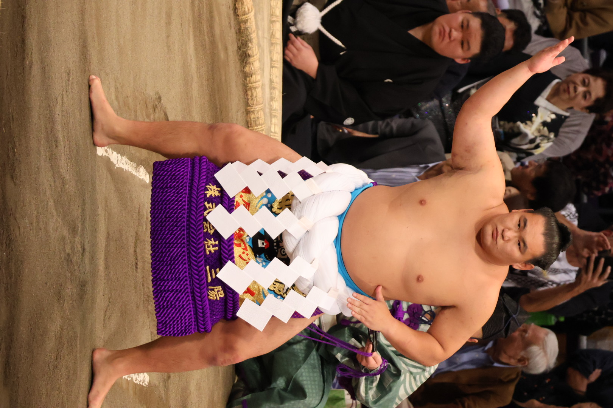
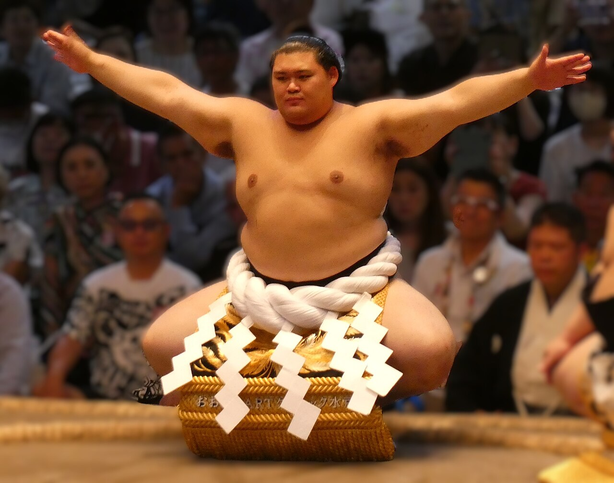

What is the rank of Yokozuna?
The yokozuna rank is the highest rank in sumo, and is the highest of the san'yaku, the title holder ranks. The name yokozuna literally means "horizontal rope", refering to the rope that they wear around their waists for ceremonial purposes. Since formal record keeping of sumo started in 1789, there have only been 75 wrestlers who have reached the rank of yokozuna. This is due to the fact that it is extremely difficult to get promoted to yokozuna. Unlike the other sumo ranks, yokozuna can not be demoted, but this means that they must keep their performance to the highest standards, like regularly winning, or almost winning, yushos (championships). A single make-koshi, a losing record, can pose serious concerns about if the wrestler is still fit for the title of yokozuna. Because of the amount of pressure that comes with upholding the rank, yokozuna tend to withdraw from bashos citing health reasons, sometimes withdrawing in the middle of a basho. If a yokozuna performs poorly for an extended period of time, or hasn't held up the dignity of the rank outside of bashos, he may be recommended to retire by the Yokozuna Deliberation Council. Retiring from sumo is the only way for a yokozuna to stop being a yokozuna.

